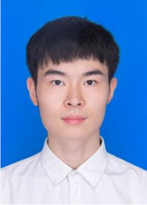

|
Ph.D. Candidate Department of Civil Engineering |
 |
About me
(cv)My name is Jiatong SONG. I am a PhD candidate in the Department of Civil Engineering majoring in Traffic and Transportation Engineering, the University of Hong Kong (HKU) starting in Sep. 2020, supervised by Prof. W.Y. Szeto (HKU). I am a member of HKU ITS.
I received my BEng degree from the Department of Traffic and Transportation Engineering, Central South University (CSU) in July, 2019 and MSc degree from the Department of Electronic and Computer Engineering, Hong Kong University of Science and Technology (HKUST) in July, 2020.
My research mainly focuses on the area of network modeling and bike-sharing, especially bike-sharing system design and shared e-bike system.
Publications
-
A Station Location Design Problem in a Bike-sharing System with Both Conventional Shared Bikes and Electric Shared Bikes Considering Bike Users' Roaming Delay Costs.
Jiatong SONG, Baicheng Li, W.Y. Szeto, Xingbin Zhan
Transportation Research Prat E, 2024. [Accepted]
Internship
-
Engineer in Automobile Division of Zhuzhou CRRC Times Electric Co.，Ltd. (Zhuzhou, Dec 2019 - Jan 2020)
-
Intern in CRRC QISHUYAN CI., LTD. (Changzhou, Sep 2018 - Nov 2018)
-
Engineer in Automobile Division of Zhuzhou CRRC Times Electric Co.，Ltd. (Zhuzhou, Jul 2018 - Sep 2018)
-
RA in Prof.Liu’s Research Group (Changsha, Dec 2017 - Mar 2018)
Teaching Experience
-
ENGG 1300 Fundamental mechanics (2020 - 2024, HKU)
-
CIVL 6054/GEOG 7006 Engineering for transport system (Fall 2021, Fall 2022, and Fall 2023, HKU)
Awards
(pdf)-
Postgraduate Scholarship, HKU, 2020 - 2024
-
National Inspirational Scholarship, Traffic and Transportation Department, CSU, 2016
-
University Student Scholarship, Traffic and Transportation Department, CSU, 2016 - 2018
Website Hit Counter